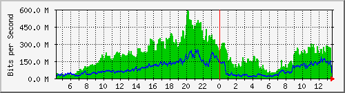
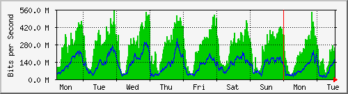
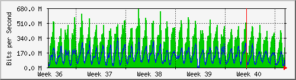
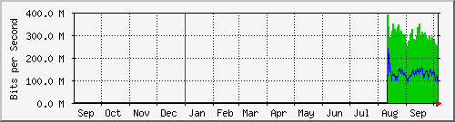

Traffic Analysis for Gi0/1 -- data-new.sky
| System: | data-new.sky in stoyka |
| Maintainer: | falcon@skyinet.org |
| Description: | GigabitEthernet0/1 |
| ifType: | ethernetCsmacd (6) |
| ifName: | Gi0/1 |
| Max Speed: | 125.0 MBytes/s |
| Ip: | 91.223.48.250 (No DNS name) |
The statistics were last updated Tuesday, 6 October 2015 at 13:35,
at which time 'data-new.sky' had been up for 12 days, 11:56:00.
`Daily' Graph (5 Minute Average)

|
Max |
Average |
Current |
| In |
598.1 Mb/s (59.8%) |
205.4 Mb/s (20.5%) |
98.4 Mb/s (9.8%) |
| Out |
251.2 Mb/s (25.1%) |
84.6 Mb/s (8.5%) |
33.4 Mb/s (3.3%) |
`Weekly' Graph (30 Minute Average)

|
Max |
Average |
Current |
| In |
552.1 Mb/s (55.2%) |
257.8 Mb/s (25.8%) |
253.3 Mb/s (25.3%) |
| Out |
323.6 Mb/s (32.4%) |
115.0 Mb/s (11.5%) |
152.4 Mb/s (15.2%) |
`Monthly' Graph (2 Hour Average)

|
Max |
Average |
Current |
| In |
666.7 Mb/s (66.7%) |
282.3 Mb/s (28.2%) |
228.4 Mb/s (22.8%) |
| Out |
335.2 Mb/s (33.5%) |
127.5 Mb/s (12.7%) |
108.7 Mb/s (10.9%) |
`Yearly' Graph (1 Day Average)

|
Max |
Average |
Current |
| In |
390.0 Mb/s (39.0%) |
291.8 Mb/s (29.2%) |
217.0 Mb/s (21.7%) |
| Out |
236.9 Mb/s (23.7%) |
129.5 Mb/s (12.9%) |
87.1 Mb/s (8.7%) |
| GREEN ### |
Incoming Traffic in Bits per Second |
| BLUE ### |
Outgoing Traffic in Bits per Second |